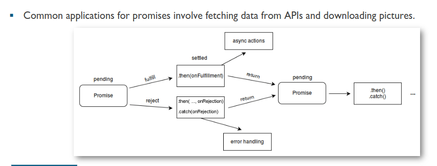

promises make it easy to manage and hande multiple asychronouse operations.
js code runs in a non-blocking manner, promises help wait for async operation without stopping other code excution.
common appication for promises invole feathing data from api and downloading picture. 
-the construictor for a promise accepts a single argument which is a callback fun. this callback func is provided with two parameters : resolve and reject; -the resolve function call denotes the successful completion of calls while the reject call denotes errors. const promise=new Promise(function(resolve,reject){ //do a thing, possibly async, then. if(//everything turned out fine){ resolve("stuff worked") }else{ reject(Error("it has broken")) } })